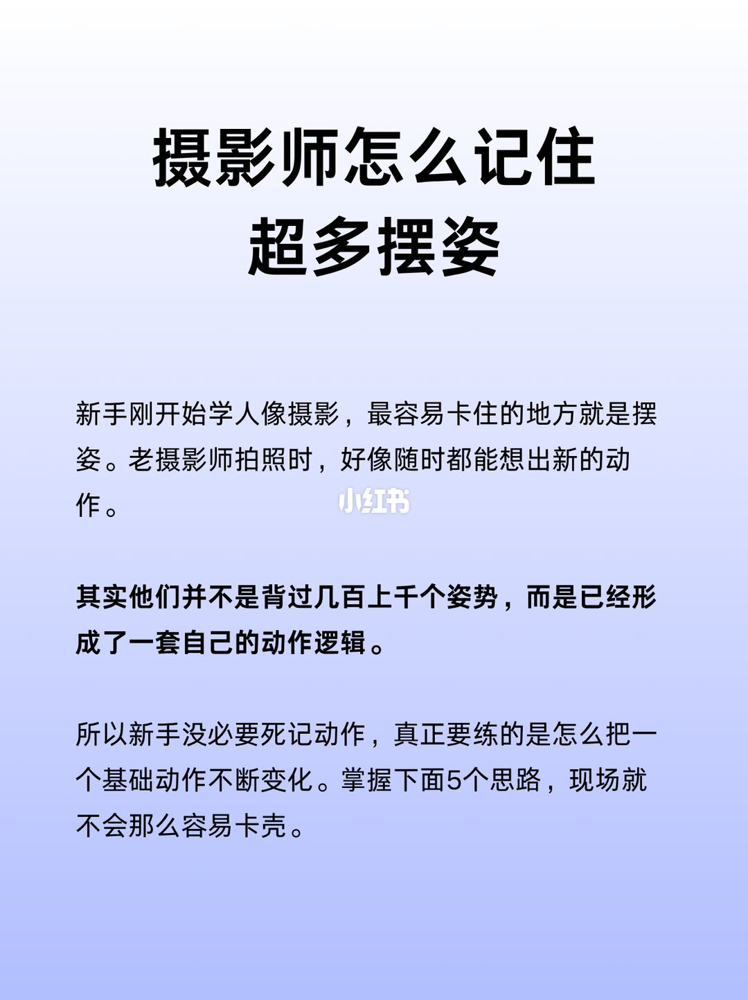
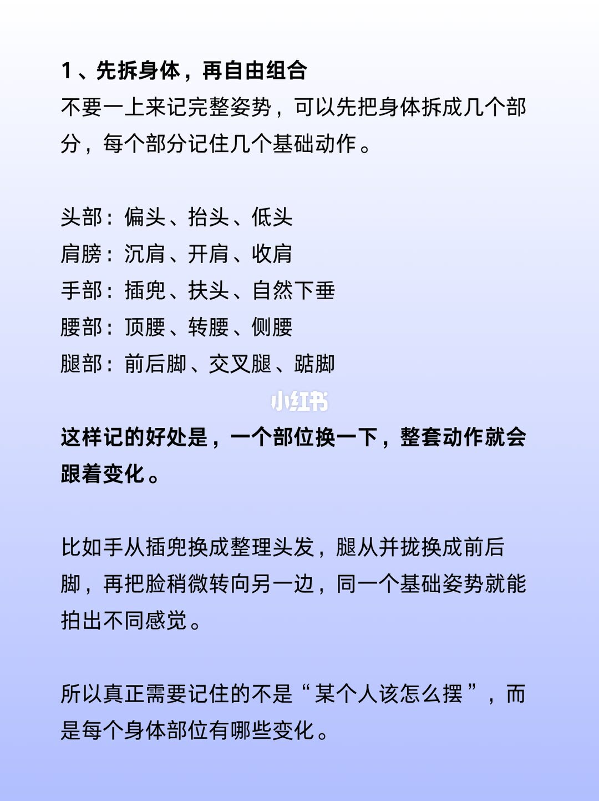
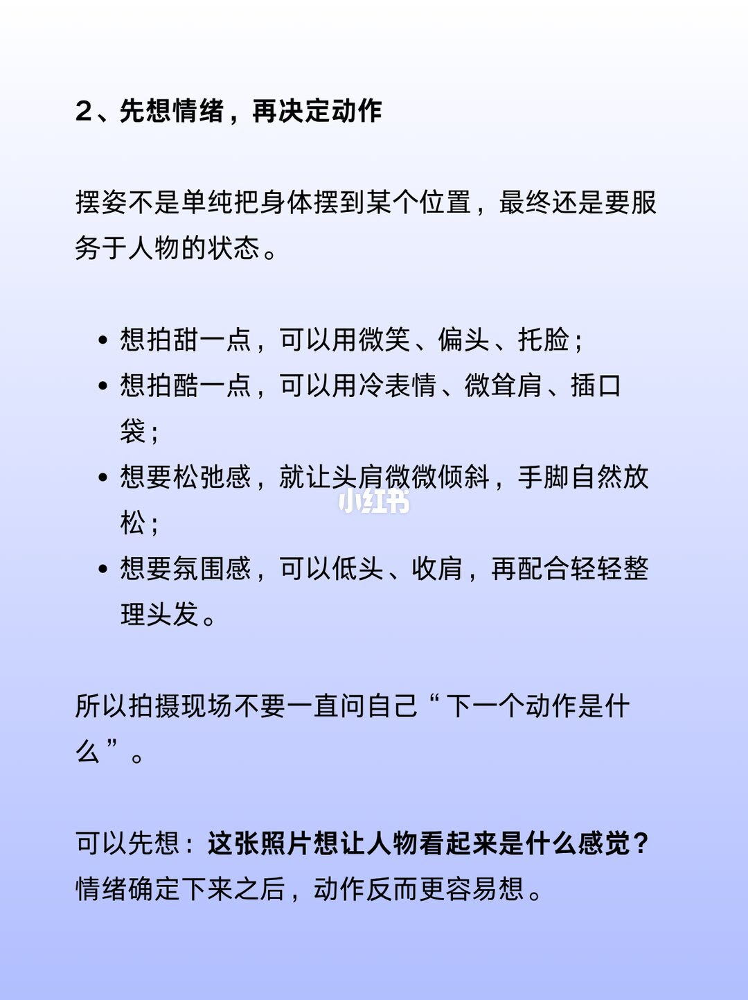
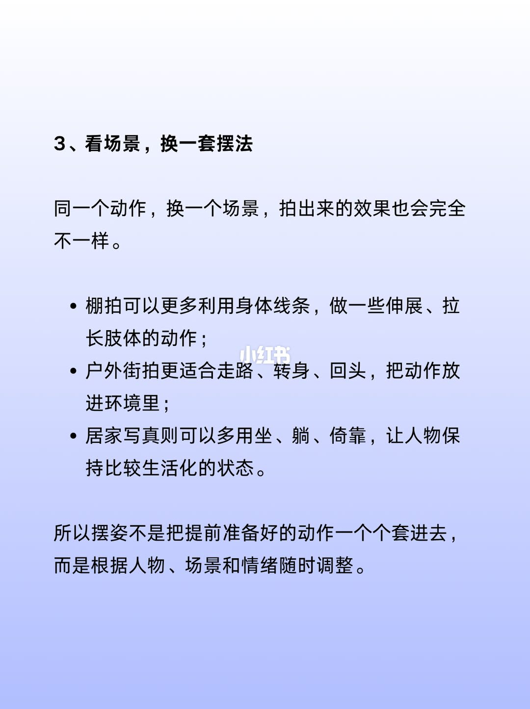
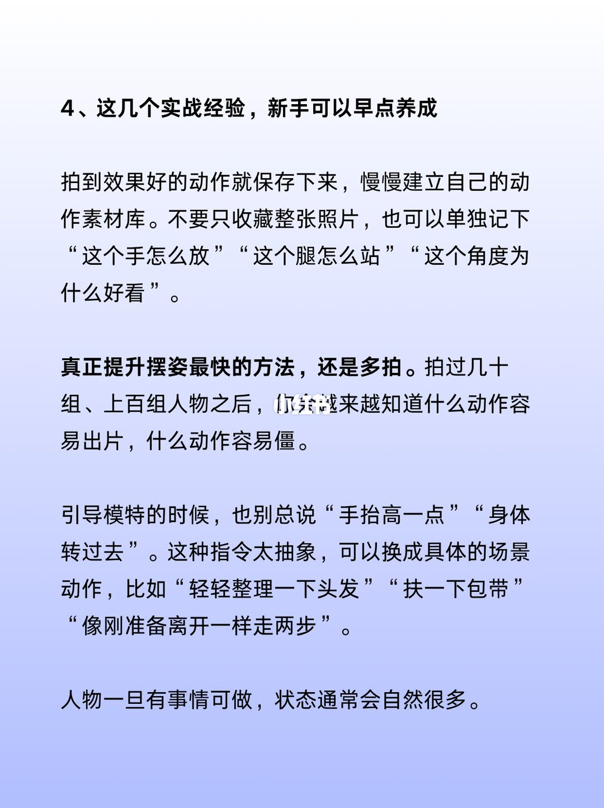
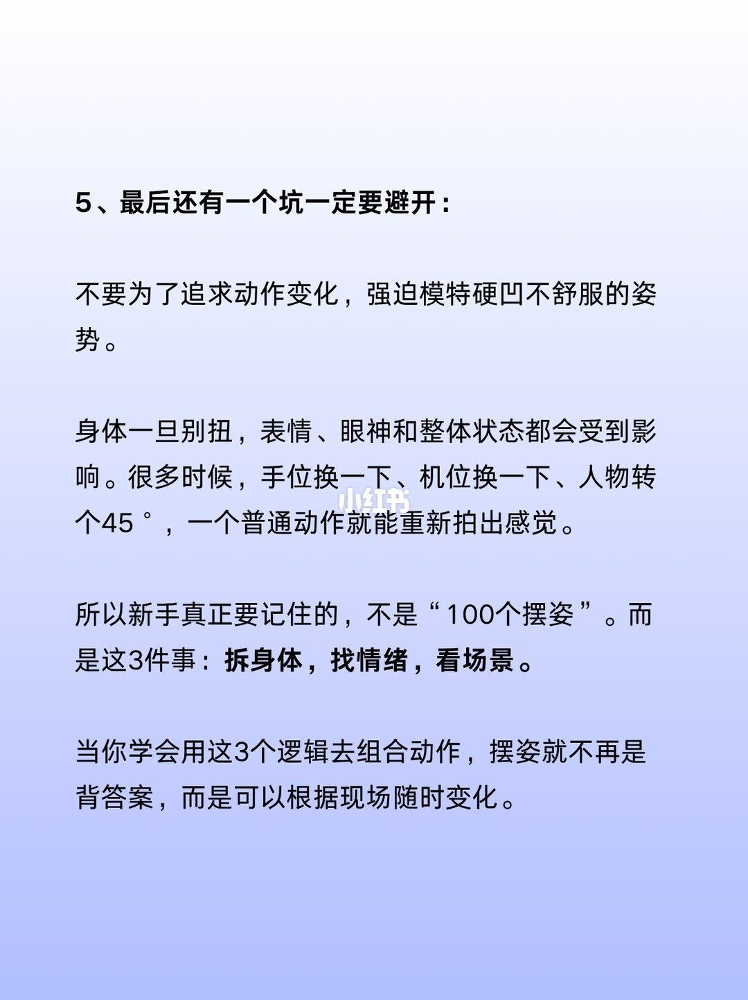
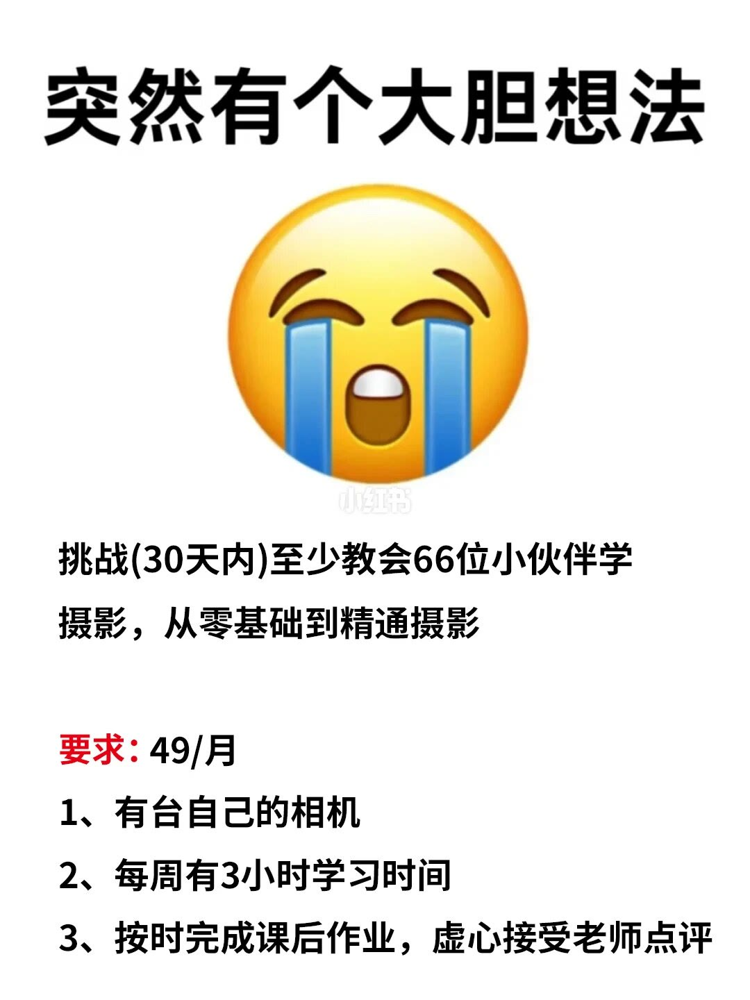

图文实录 · 小红书 · 阿纯摄影日记
摄影师怎么记住超多摆姿丨摄影小白干货
记住的不是几百个完整姿势。前六页把摆姿收成五件事：拆开身体再换一个部位、先定情绪再选动作、按棚拍街拍居家换一套、把好用的局部记下来并用具体的事去引导、别为了变化硬凹。第七页是招生条件，不是第六个摆姿方法。
1/7
不背姿势，练变化
封面只有字。标题是「摄影师怎么记住超多摆姿」。正文写：新手刚开始学人像摄影，最容易卡住的地方就是摆姿。老摄影师拍照时，好像随时都能想出新的动作。其实他们并不是背过几百上千个姿势，而是已经形成了一套自己的动作逻辑。所以新手没必要死记动作，真正要练的是怎么把一个基础动作不断变化。掌握下面 5 个思路，现场就不会那么容易卡壳。这页没有示范照片，也没有写出五个思路的名字。

2/7
先拆身体，再自由组合
第一条：不要一上来记完整姿势，先把身体拆开，每个部分记几个基础动作。头部是偏头、抬头、低头。肩膀是沉肩、开肩、收肩。手部是插兜、扶头、自然下垂。腰部是顶腰、转腰、侧腰。腿部是前后脚、交叉腿、踮脚。好处写的是：一个部位换一下，整套动作就会跟着变化。例子是手从插兜换成整理头发，腿从并拢换成前后脚，脸稍微转向另一边，同一个基础姿势就能拍出不同感觉。收束句是：真正要记住的不是「某个人该怎么摆」，而是每个身体部位有哪些变化。页上没有解释顶腰、侧腰怎么做，也没有配图。

3/7
先想情绪，再决定动作
第二条写：摆姿不是单纯把身体摆到某个位置，最终还是要服务于人物的状态。想拍甜一点，可以用微笑、偏头、托脸。想拍酷一点，可以用冷表情、微耸肩、插口袋。想要松弛感，就让头肩微微倾斜，手脚自然放松。想要氛围感，可以低头、收肩，再配合轻轻整理头发。现场不要一直问「下一个动作是什么」，先问这张照片想让人看起来是什么感觉。情绪定下来之后，动作反而更容易想。四种感觉各给了一小组动作，没有写互斥，也没有写同一张脸能不能同时甜和酷。

4/7
看场景，换一套摆法
第三条：同一个动作换一个场景，拍出来的效果也会完全不一样。棚拍可以更多利用身体线条，做伸展、拉长肢体的动作。户外街拍更适合走路、转身、回头，把动作放进环境里。居家写真可以多用坐、躺、倚靠，让人物保持比较生活化的状态。收束是：摆姿不是把提前准备好的动作一个个套进去，而是根据人物、场景和情绪随时调整。三种场景各举了动作方向，没有写镜头、光线或具体站位。

5/7
记局部，把指令说成一件事
第四条标题是「这几个实战经验，新手可以早点养成」。拍到效果好的动作就保存下来，慢慢建立自己的动作素材库。不要只收藏整张照片，也可以单独记下「这个手怎么放」「这个腿怎么站」「这个角度为什么好看」。真正提升最快的方法被写成多拍：拍过几十组、上百组人物之后，会越来越知道什么动作容易出片、什么动作容易僵。引导时别总说「手抬高一点」「身体转过去」，这种指令太抽象，换成「轻轻整理一下头发」「扶一下包带」「像刚准备离开一样走两步」。人物一旦有事情可做，状态通常会自然很多。「几十组、上百组」和「通常」都是作者的判断，页上没有对照拍摄。

6/7
别硬凹，记住三件事
第五条要避开的坑是：不要为了追求动作变化，强迫模特硬凹不舒服的姿势。身体一旦别扭，表情、眼神和整体状态都会受到影响。很多时候，手位换一下、机位换一下、人物转个 45°，一个普通动作就能重新拍出感觉。新手真正要记住的不是「100 个摆姿」，而是三件事：拆身体，找情绪，看场景。学会用这三套逻辑去组合，摆姿就不再是背答案，而是可以根据现场随时变化。45° 没有写是相对镜头还是相对身体原方向。前四条里的素材库和具体口令，没有写进这三件事。

7/7
三十天教会六十六人
最后一页不是摆姿。白底正中一个哭脸，页上写「突然有个大胆想法」。下面两行是：挑战（30 天内）至少教会 66 位小伙伴学摄影，从零基础到精通摄影。红色一行是「要求：49/月」。三条要求：有台自己的相机；每周有 3 小时学习时间；按时完成课后作业，虚心接受老师点评。页上没有写 49/月对应什么、课在哪里上、怎样算精通。这些无法从本页确认。

收尾
五条是方法，第七页是报名
结论。老摄影师看起来姿势多，是因为在换部位、换情绪、换场景，不是因为背下了几百个完整姿势。现场先定感觉和场合，再改一个部位；人不舒服就换手、换机位或转 45°，不要硬凹。引导说成一件事，比「抬高一点」具体。
支撑页。总判断在 1/7。部位清单和换一个部位的例子在 2/7。四种感觉在 3/7。棚拍、街拍、居家在 4/7。素材库和具体口令在 5/7。硬凹的边界和「拆身体、找情绪、看场景」在 6/7。
边界。七页都是文字，没有摆姿示范，顶腰、侧腰、45° 的方向无法按图核对。2/7 的例子用了清单里没有的「整理头发」和「并拢」。3/7 的微笑、托脸、冷表情、微耸肩也不在 2/7 的十五个词里。5/7 的几十组、上百组是经验说法。6/7 把方法收成三件事时，没有带上 5/7。7/7 的 49/月、六十六人和「从零到精通」没有课程说明，不能当成摆姿步骤。